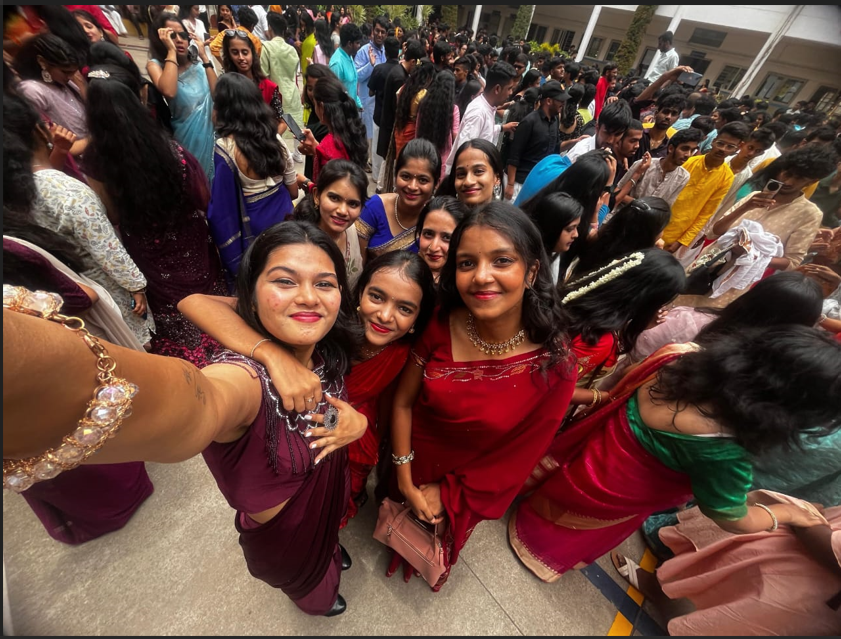
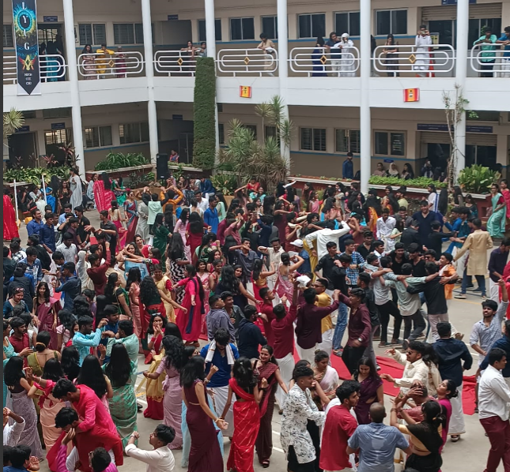
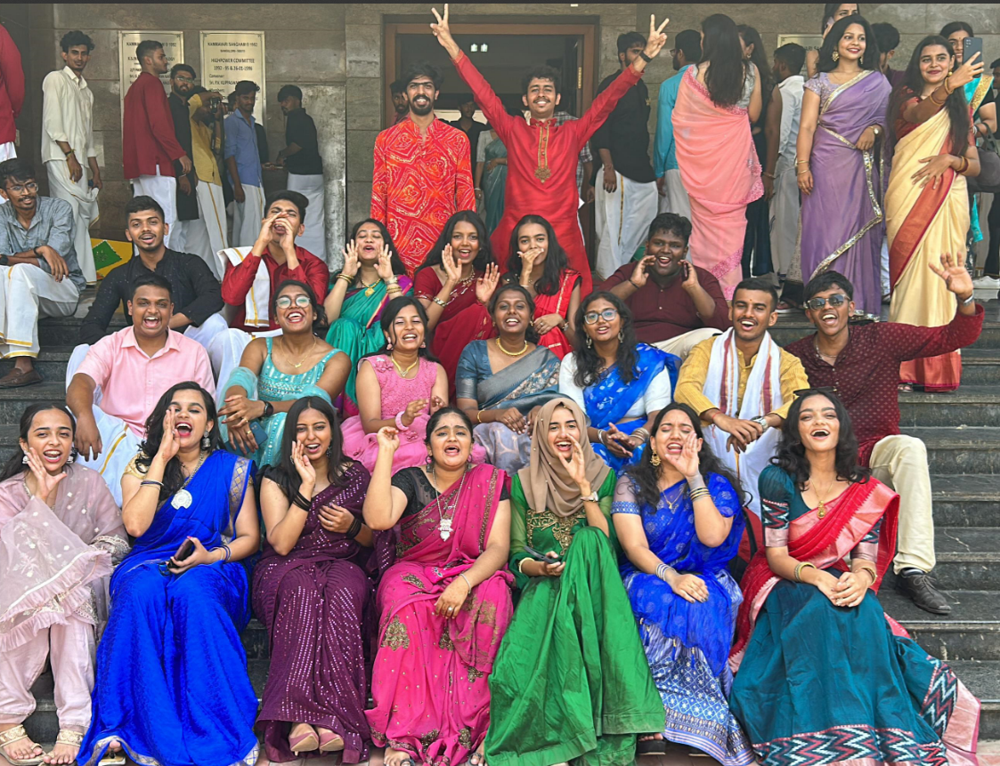

VIBRANT DISPLAY OF FASHION
Ethnic Day at KSIT College is a spectacular celebration of tradition, culture, and unity. The campus is abuzz with excitement as students trade in their usual attire for the rich and diverse traditional clothes of India, transforming the college into a vibrant tapestry of colors and patterns.
As the event kicks off, the atmosphere is electric with anticipation. Students step onto the stage, showcasing a dazzling array of outfits. The girls are resplendent in elegant sarees, lehengas, and salwar kameez, each garment a masterpiece of embroidery, sequins, and beadwork. Some opt for regional attire like the graceful Kerala Kasavu saree, the vivid Bandhani sarees from Gujarat, or the opulent Kanjeevaram silk sarees from Tamil Nadu. Accessories like bangles, jhumkas, and bindis add to the splendor, making the ensemble even more breathtaking.
The boys are equally impressive, donning traditional outfits such as kurta-pajamas, dhotis, sherwanis, and pathani suits. Some wear traditional turbans or pagdis, adding a regal touch to their appearance. The diversity of the attire reflects the unity and rich cultural heritage of India, as students from different backgrounds come together to celebrate their shared traditions.

UNITY IN VIBRANT TRADITION!!
Ethnic Day at KSIT College is not just about the stunning outfits; it’s a full-fledged cultural extravaganza that immerses everyone in the vibrant traditions of India. The entire campus, especially the courtyard, becomes a lively hub of festivities, brimming with excitement and energy.
The day is filled with a series of traditional dance performances that captivate the audience with their grace and rhythm. Groups of students perform classical dances like Bharatanatyam, Kathak, and Odissi, each movement telling stories of ancient times and showcasing the rich history of Indian dance forms. The vibrant costumes, intricate footwork, and expressive gestures of the dancers bring these stories to life, leaving the audience in awe. Folk dances like Bhangra, Garba, and Lavani add a burst of energy and color to the event, inviting everyone to clap along and even join in the fun.
Music is another highlight of the day. Live performances of classical Indian music, featuring instruments like the sitar, tabla, and flute, create a soothing and melodious backdrop. The soulful renditions of ragas and traditional songs resonate through the courtyard, adding a touch of serenity to the festivities. Contemporary performances, including Bollywood hits and fusion music, keep the energy high and the crowd entertained. There are also spontaneous sing-alongs, with students and teachers coming together to celebrate through music.

UNITING HEARTS AND HERITAGE
Ethnic Day at KSIT College is a vibrant celebration that unites students by dissolving cultural barriers and showcasing the rich tapestry of Indian traditions. The event highlights Indian culture's beauty and fosters unity and mutual respect among students.
The culinary aspect is a highlight, with stalls offering diverse traditional foods—from spicy street snacks to sweet treats—creating a delicious dimension to the festivities.
The atmosphere is filled with joy and camaraderie, as students engage in lively conversations, admire each other’s traditional attire, and capture memorable moments. By the end of the day, students leave with a deeper appreciation of their heritage and a strengthened sense of community, celebrating their shared identity and pride in their cultural roots.